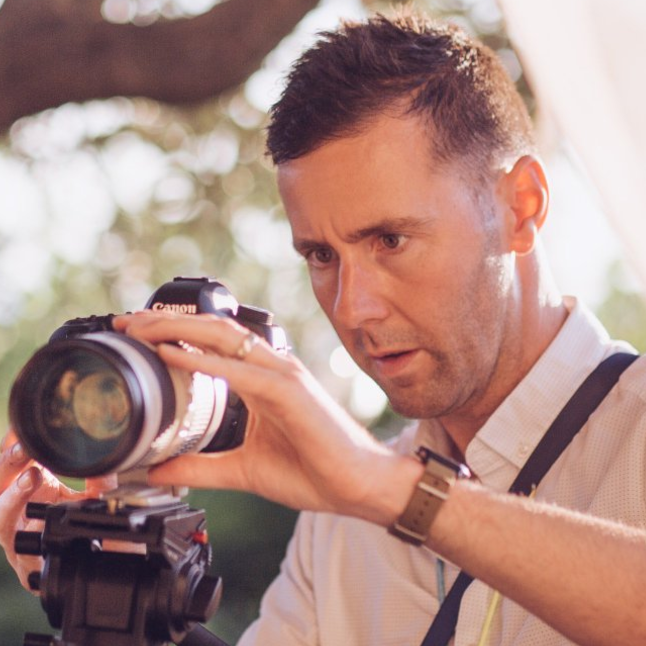

When we work together it is a truly collaborative process. I take the time to get to know you and your organisation, really understanding your story so that I can sell it to the world.
As a communications professional and filmmaker what I bring to the table is a heightened knowledge of marketing trends. My ear is constantly to the ground for the latest analytics on what videos are being shared, I've had several of my videos go viral with hundreds of thousands of views, and how to convert views into sales, I've doubled the sales for one startup. I want to make the strongest marketing material for you, in addition to making something beautiful and innovative.
In terms of filmmaking style, I like to pick out small details (using my favoured 50mm lens), creating an intimacy and mystery which draws in the viewer.
If you’re nervous in front of the camera, then I have a great ability to relaxing participants and draw out a natural performance as you can see from the testimonials below.
Services
Editing
Have some test footage of your product which you’ve shot but never used? I've worked with clients such as Tescos and LCA films to turn several hours of material into a scintillating 3-4 mins promotional video.
Music Video
YouTube is the second biggest search engine. Making a great video is a great way to be discovered.
Corporate Video
Google loves video, almost a third of people are visual learners, and it’s easy to share. In this day and age having a great corporate video is key to helping your business convert.
Advertisement
We partner brands creating work, which is compelling, intelligent and meaningful without losing its core focus on ethos and message.
Event coverage
For events, we maintain a small footprint on the day and then work our magic in the editing suite. You want an event filmed, edited and delivered back to you in your required format. No hassles, no worries.
Photography
Use your photos to build your brand, grab your customer’s attention and tell your story.
Testimonials
Having worked with Grace on several occasions she has stood out as dedicated, passionate and 100% reliable. She is always striving to do the best for her clients and is absolutely my first choice for project work."

Ross Horne, Director of LCA Films
"Grace was very helpful throughout the whole filming session, I was very nervous, but she talked to me and comforted me, and I slowly relaxed into myself. Turns out the result is great! I look natural in the video and we love it so much!"
Miki Tan, ACAT Manager
"Grace recorded and edited the second edition of our event Ultimate Marketing Class in Penang, Malaysia, and I was just amazed by the results. She delivered a video I am now proud to share. I can’t wait for the next opportunity to work with her."
Davidson Paulo, Marketing Professional
"Working with Grace is a truly awesome experience. She got on camera the joy and happiness of our event. I would not think twice to work with her again."
Zoel NG
"I had Grace put together a wonderful eye catching and informative advert for my business. She was very open to any suggestions I gave her and figured out the best ways to implement them into the video. She's very patient with the whole process, especially making sure everyone is happy with the end result, I certainly was."
Arthur Wilkinson, Director of Float For Health Sdn. Bhd.
"Grace is friendly and easy to work with. We asked her to make a short video for our community organization. She arrived on site and put us all at ease before filming; this was important as not everyone had experience of being interviewed in front of a camera. We were very pleased with the result, and the video looks great."
Alex, Oxford
"She really understood the project and had a good rapport with the young people from the moment she entered the room."